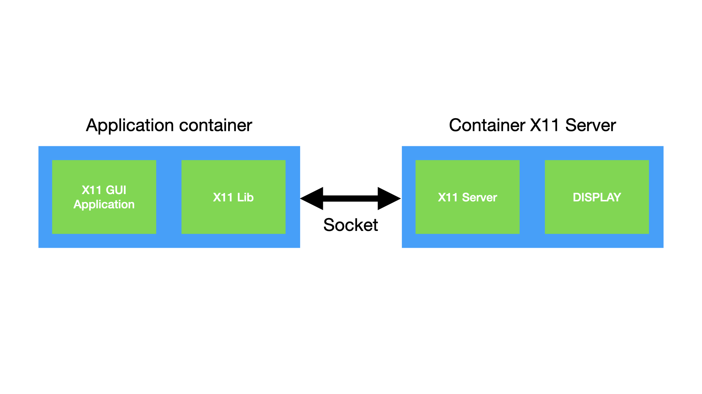
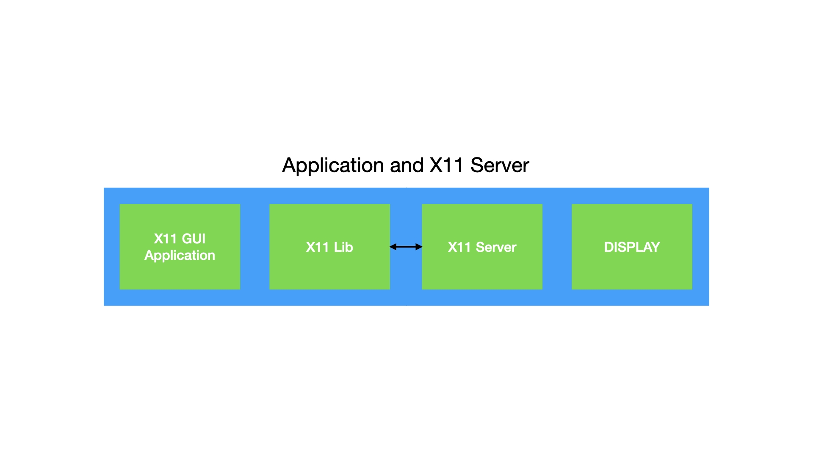
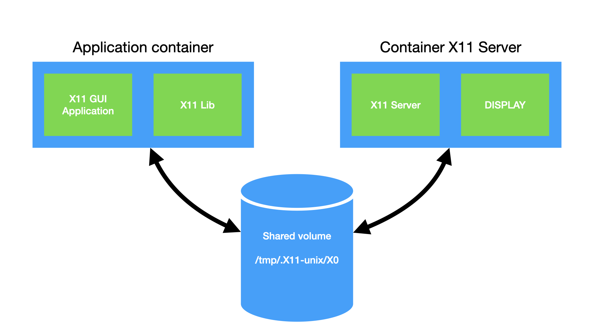
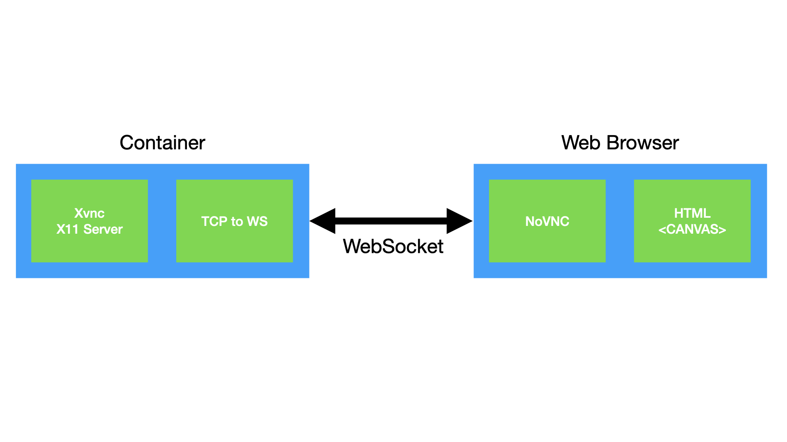

GUI Application in docker
Related Projets on VDI with docker
abcdesktop, or YAVDI (Yet Another VDI docker projet)
A lot of different projets already exists using docker containers as a VDI. abcdesktop is just another one. I just write list of projets, you can explore them :
-
https://github.com/mviereck/x11docker x11docker allows to run graphical desktop applications (and entire desktops) in Docker Linux containers.
-
https://www.digitalocean.com/community/tutorials/how-to-remotely-access-gui-applications-using-docker-and-caddy-on-ubuntu-18-04 By using noVNC and TigerVNC, you can run native applications inside a Docker container and access them remotely using a web browser.
-
HW accelerated GUI apps on Docker Describe How to containerizing a GUI app. Really easy to understand, a good article.
-
https://github.com/fcwu/docker-ubuntu-vnc-desktop docker-ubuntu-vnc-desktop is a Docker image to provide web VNC interface to access Ubuntu LXDE/LxQT desktop environment.
-
Dockerize GUI app This project dockerize typical GUI app so that you can visit it in browser. Really good technical solutions.
- Docker and Wine Docker image that includes Wine and Winetricks for running Windows applications on Linux and macOS
X window system architecture
In a *nix system a GUI application has the role of “X client”. Each time it redraws its content a sequence of graphics commands is encoded into the X protocol using a library (usually Xlib) and transmitted into the X11 socket. At the other end an X server reads such commands from the socket and renders them onto a display. [ source HW accelerated GUI apps on Docker] 
Containerizing a GUI app
Taking a look at the X window system architecture it’s clear that in order to make our containerized GUI apps capable of drawing on a screen we need to give it write access to the X11 socket, and we need an X server to consume and render the graphics commands onto a display.
We can approach this problem from three angles:
All in one container

- we can bundle X11 server with our container image. All process run inside the same container.
Separated container
-
we can share the X11 server socket with the X11 client container as unix file socket on an external shared volume. Applications and X11 server run in dedicated containers.
-
we can share the X11 server socket with the container using TCP. X11 uses TCP as its transport protocol. Applications and X11 server run in dedicated containers.
abcdesktop choice

To guarantee isolation, abcdesktop/io.io run X11 server and X11 client in separated container. X11 server and X11 client share the socket as unix file socket on a dedicated external shared volume.
-
The unix file socket reduce the network tcp overhead.
-
The unix file socket garantes no latency troubleshooting. X11 uses a chatty protocol so that the network latency has a large impact when using X11
Local is best, thus server and application need to run on the same node.
HTML5 Web Browser as remote DISPLAY

The Web Browser does not support X11 protocol. We need a graphical desktop system to paint the virtual DISPLAY in a <canvas> HTML element.
Replace X11 Server from X.org, by a Xvnc.
Xvnc is the X VNC (Virtual Network Computing) server. It is based on a standard X server, but it has a virtual screen rather than a physical one. X applications display themselves on it as if they were using a normal X display, but they can only be accessed via a VNC. So Xvnc is really two servers in one. To the applications it is an X server, and to the remote VNC users it is a VNC server.
Convert VNC TCP socket in to a WebSocket
The web browser does not support VNC (RFB Protocol) and the TCP socket natively. We need to translate TCP socket, into a WebSocket. This can be done using :
-
websockify Websockify just translates WebSockets traffic to normal socket traffic. Websockify accepts the WebSockets handshake, parses it, and then begins forwarding traffic between the client and the target in both directions.
-
ws-tcp-bridge A websocket to tcp proxy server, using nodejs which bridges websockets and tcp servers in either direction.
Use a VNC Javascript client
The web browser receives the RFB protocol in the WebSocket and then paints the data into a canvas.
- noVNC is VNC client JavaScript library. noVNC follows the standard VNC protocol, but unlike other VNC clients it requires WebSockets support.